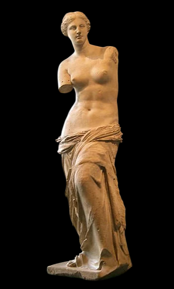

Скульптура

Известные скульптуры мира
Среди старейших скульптур, обнаруженных на сегодняшний день, - человек-лев, который был найден в 1939 году в немецкой пещере. Ему от 35 000 до 40 000 лет и он относится к доисторическому периоду или периоду до изобретения письма. Другой знаковой доисторической скульптурой является Венера Виллендорфская, 4,4-дюймовая фигурка, изображающая женщину. Она был найдена в Австрии и, по оценкам, была вырезана между 24000 и 22000 годами до нашей эры. В Древней Греции и Риме скульптуры часто делали в честь различных богов или чтобы показать величие королей. Венера Милосская, изображающая греческую богиню любви и красоты, - пожалуй, самое известное произведение древнегреческой скульптуры. Во время правления римского императора Константина (306 - 337 гг. Н.э.) христианство стало доминирующей религии Римской империи и со временем европейская скульптура начала изображать библейских персонажей и истории. Среди самых известных таких произведений искусства - статуя Давида работы Микеланджело. Самым известным произведением современной скульптуры является, пожалуй, «Мыслитель», созданный французским художником Огюстом Роденом. Вот 10 самых известных скульптур в мире.
Экстаз Святой Терезы
📍Местоположение: Санта-Мария-делла-Виттория, Рим, Италия
👨Скульптор: Джан Лоренцо Бернини
🕑Год: 1652
Святая Тереза Авильская была испанской монахиней, которая утверждала, что испытала божественные видения, в которых она почувствовала себя поглощенной любовью Бога, ощутила телесное присутствие Христа или ангелов и была вознесена в состояние возвышенного экстаза. Эти видения она описывала в своих писаниях.
В 1622 году, через сорок лет после ее смерти, Тереза была канонизирована папой Григорием XV. Эта скульптура изображает одно из видений, описанных ею в ее духовной автобиографии. Перед ней появляется ангел, несущий копье с огненным наконечником. Он пронзает ее сердце копьем, что приводит ее в состояние духовного восторга. Джан Лоренцо Бернини считается пионером скульптуры в стиле барокко, стиля, процветавшего в Европе с начала 17 до конца 18 века. В этом шедевре Бернини используя принципы барокко; драматизм, эмоциональность и театральность. Экстаз Святой Терезы - самая известная работа одного из самых влиятельных скульпторов всех времен.
Пьета
📍Местоположение:Базилика Святого Петра, Ватикан
👨Скульптор: Микеланджело
🕑Год: 1499
Микеланджело, работавший в эпоху Возрождения, широко известен как самый влиятельный скульптор всех времен. Ему было всего 24 года на момент завершения создания Пьеты, которая вскоре стала одним из величайших шедевров скульптуры в мире. Пьета, как тема христианского искусства, изображает Деву Марию, поддерживающую тело мертвого Христа после Распятия. Хотя этот предмет не является частью библейского повествования о Распятии, он широко представлен как в европейской живописи, так и в скульптуре.
На этой знаменитой работе изображена Дева Мария, скорбящая о теле Иисуса, лежащего у нее на коленях после Распятия. Во время его завершения некоторые наблюдатели критиковали Микеланджело за то, что он показал Марии слишком юной, чтобы иметь 33-летнего сына. Микеланджело защищался, говоря, что ее молодость символизирует ее неподкупную чистоту. Пьета - единственная скульптура, когда-либо подписанная Микеланджело. Подпись скульптора видна на груди Мэри.

Бронзовый Давид
📍Местоположение:Музей Барджелло, Флоренция, Италия
👨Скульптор: Донателло
🕑Год: 1440-е годы
Бронзовый Давид известен как первая крупномасштабная отдельно стоящая статуя обнаженной натуры со времен античности. Это также первая стоящая без опоры статуя бронзового литья в эпоху Возрождения. На нем изображен Давид из истории Давида и Голиафа, держащего меч побежденного врага и ногой на отрубленной голове Голиафа. Дэвид полностью обнажен, за исключением шляпы с лавровым верхом и ботинок. Изящная и стройная фигура Давида контрастирует с гигантским мечом в его руке, что, возможно, указывает на помощь Бога в его достижении невероятного подвига.
Донателло считается одним из отцов-основателей эпохи Возрождения, и он был ведущим скульптором его раннего периода. Среди прочего, он дал иное направление западной скульптуре, уводя ее от господствующего готического стиля к классическому. В 1409 году Донателло создал одетую мраморную статую Давида в готическом стиле, но она не так известна, как Бронзовый Давид, выполненный в классическом стиле и считающийся его величайшим шедевром.
Великий сфинкс
📍Местоположение: плато Гиза, Гиза, Египет
👨Скульптор: Неизвестный
🕑Год: Неизвестно
Один из самых известных памятников в мире, Великий Сфинкс Гизы, представляет собой гигантскую известняковую статую сфинкса, мифического существа с телом льва и головой человека. Сфинкс имеет 73 м в длину от лапы до хвоста; высотой 20 м от основания до макушки; и имеет ширину 19 м. Большой Сфинкс - самая старая известная монументальная скульптура в Египте, и на протяжении веков она была самой большой скульптурой в мире. Однако о памятнике известно немногое. Ученые расходятся во мнениях относительно того, когда и для кого был построен Великий Сфинкс.
Самая популярная точка зрения состоит в том, что он представляет фараона Хафра из 4-й династии во времена Древнего царства, и, таким образом, он был построен во время его правления, которое длилось с 2558 г. до н.э. по 2532 г. до н.э. Согласно некоторым недавним исследованиям, Сфинкс был построен еще в 7000 году до нашей эры, что позволяет предположить, что статуя была произведением развитой цивилизации, предшествовавшей древним египтянам. Однако традиционные египтологи отвергают эту точку зрения.
Христос-Искупитель
📍Местоположение: гора Корковадо, Рио-де-Жанейро, Бразилия
👨Скульптор: Пол Ландовски
🕑Год: 1931
В 1921 году Римско-католический округ Рио-де-Жанейро предложил построить статую Иисуса Христа на горе Корковадо. Высота вершины в 704 м, должна была сделать статую видимой из любой точки Рио. Бразильский инженер Эитор да Силва Коста был выбран для создания статуи, а французский скульптор Поль Ландовски создал работу. Сильва Коста работал в сотрудничестве с французским инженером Альбертом Како, в то время как румынский скульптор Георге Леонида создал лицо статуи. Христос-Искупитель был завершен в 1931 году.
Его высота составляет 30 м, не считая пьедестала в 8 м. По горизонтали протянутые руки Христа составляют 28 м. Христос-Искупитель стал символом христианства во всем мире. Это культурная икона как Рио-де-Жанейро, так и Бразилии. Статуя была признана одним из Новых семи чудес света в опросе 21 века, набравшем более 100 миллионов голосов.
Мыслитель
📍Местоположение: Музей Родена, Париж, Франция
👨Скульптор: Огюст Роден
🕑Год: 1904
Огюст Роден был выдающейся фигурой в области скульптуры, которого многие считают отцом современной скульптуры. Первоначально он задумал эту статую как часть большого заказа, начатого в 1880 году, для дверного проема под названием Врата ада. Роден вдохновился на это творчество «Божественной комедией Данте», и некоторые критики считают, что «Мыслитель» изначально намеревался изобразить Данте. Многие мраморные и бронзовые копии «Мыслителя» в нескольких размерах были выполнены при жизни Родена и даже после его смерти. Однако самая известная версия - это бронзовая статуя высотой 1,8 м, отлитая в 1904 году и находящаяся в садах музея Родена в Париже.
Это изображение человека, задумавшегося, но чье мощное тело предполагает огромную способность к действию, стало одной из самых знаменитых скульптур, когда-либо известных. Мыслитель изначально назывался «Поэт» и его часто использовали как образ для представления философии. Это самая известная работа величайшего скульптора современности.
Венера Милосская
📍Местоположение: Лувр, Париж, Франция
👨Скульптор: вероятно, Александрос Антиохийский
🕑Год: между 130 г. до н.э. и 100 г. до н.э.
Принято считать, что эта статуя была обнаружена 8 апреля 1820 года крестьянином по имени Йоргос Кентротас. Он нашел его по частям на Милосе, греческом острове в Эгейском море. Впоследствии скульптура была подарена королю Франции Людовику XVIII, который затем передал ее в Лувр, где она выставлена по сей день. Считается, что Венера Милосская, также известная как Афродита Милосская, представляет Афродиту, древнегреческую богиню любви, красоты, удовольствия и продолжения рода. Римской богиней Афродитой была Венера. Считается, что статуя была вырезана Александросом Антиохийским, скульптором эллинистического периода.
Помимо широко обсуждаемой тайны о его пропавших руках, изначально она была украшена браслетом, серьгами и повязкой на голове. Однако все это давно потеряно. Венера Милосская, пожалуй, самое известное произведение древнегреческой скульптуры. Она широко использовалась в популярной культуре и оказала большое влияние на современных художников, в том числе Сальвадора Дали.

Давид
📍Местоположение: Галерея Академии, Флоренция, Италия
👨Скульптор: Микеланджело
🕑Год: 1504
В 1501 году городское правительство Флоренции поручило Микеланджело создать эту статую в рамках серии, украшающей линию крыши купола собора Флоренции. Однако после его завершения члены комиссии были настолько поражены его красотой, что было решено поставить его на всеобщее обозрение рядом с входом в Палаццо Веккьо, ратушу Флоренции. Мраморная скульптура была перенесена в 1873 году в Галерею Академии, художественный музей во Флоренции. Реплика была размещена на ее первоначальном месте в 1910 году. Давид Микеланджело, скорее всего, представляет библейского героя Давида после того, как он решил сразиться с Голиафом, но до самой битвы. Это не похоже на более ранние изображения Давида в эпоху Возрождения, которые показывают его после битвы и включают некоторую часть гигантского Голиафа.
Микеланджело мастерски изображает библейского героя с поднятым бровью, напряженной шеей и выпирающими венами из опущенной правой руки. Давид - самая известная скульптура, возможно, величайшего скульптора всех времен. Это одно из самых известных произведений искусства в мире.
Статуя Свободы
📍Местоположение: Остров Свободы, Манхэттен, Нью-Йорк, Нью-Йорк, США
👨Скульптор: Фредерик Огюст Бартольди
🕑Год: 1886
Статуя Свободы, олицетворение концепции свободы, существовала как богиня во многих культурах. Со времен Французской революции фигура Свободы считается символом Франции и Французской Республики. Эта известная медная статуя была подарком народа Франции народу Соединенных Штатов. Она был разработан французским скульптором Фредериком Огюстом Бартольди и построена известным французским инженером-строителем Гюставом Эйфелем.
Статуя Свободы изображает римскую богиню Либертас, держащую факел над головой в правой руке, а в левой руке она держит табличку, на которой римскими цифрами начертана дата Декларации независимости США. Статуя Свободы как американская икона изображена на монетах и марках страны. Она также стал международным символом свободы. Она была описана как «шедевр человеческого духа» и внесена в список Всемирного наследия ЮНЕСКО в 1984 году. Статуя Свободы является самой известной скульптурой в мире.